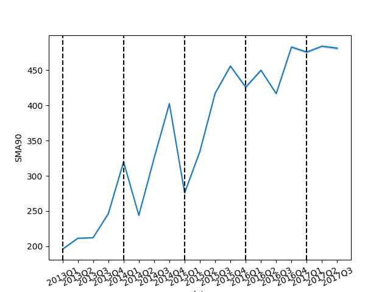

Passenger Survival on the Titanic
(Random Forest Classifier)
The dataset contains consecutive transactions from January 1, 2013 to August 15, 2017. The transactions are from the Favorita stores located in Ecuador.

The Moving Average is the average sales within a sliding window of 90 days, a quarter, to visuaize the long term changes in sales and minimize the short term fluctuations caused by circumstances like holidays. While the trend appears linear, time only explains 15% of the moving average sales per quarter.
There are steep declines in the average sales during Q1 and Q4 of 2014.
During this period the country was in a low inflation period with slow changes in the price of goods.
The decline may be attributed to spead of an illness, such as Ebola.
There is an additive seasonality in the sales as the median price increases year over year.
The results of the analysis can be found in the following workbook:
Analysis Workbook
References:
https://www.kaggle.com/competitions/store-sales-time-series-forecasting/data?select=train.csv
https://www.kaggle.com/learn/time-series
https://www.geeksforgeeks.org/how-to-calculate-moving-average-in-a-pandas-dataframe/
https://bfi.uchicago.edu/wp-content/uploads/The-Case-of-Ecuador.pdf
https://towardsdatascience.com/finding-seasonal-trends-in-time-series-data-with-python-ce10c37aa861